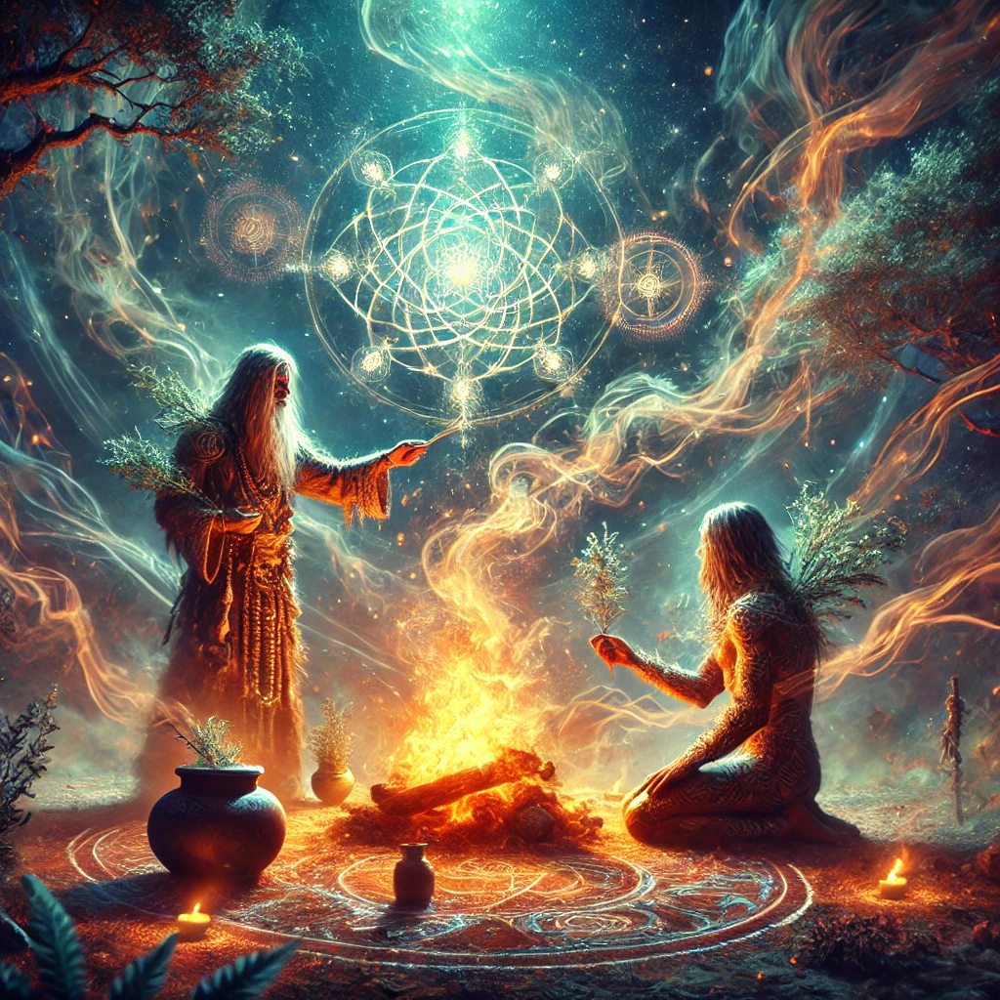

The shaman smiles faintly as you nod, signaling your acceptance of the ritual. They rise, spreading sacred herbs over the fire. Aromatic smoke swirls around you, filling the air with a heady, ancient scent.
Chanting in a language that resonates deep in your soul, the shaman traces symbols in the air. You feel a tingling energy coursing through your body as the boundaries between the physical and spiritual realms dissolve. The shaman reaches out, placing a hand on your chest.
“The compass carries many paths, but your heart must choose. Let this ritual align you with the flow of the unseen world,” they whisper.

What do you feel compelled to do?